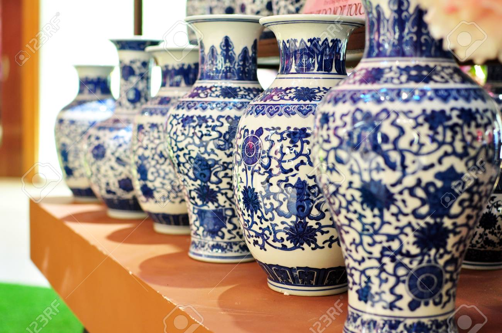
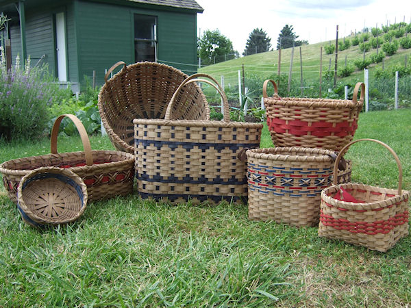
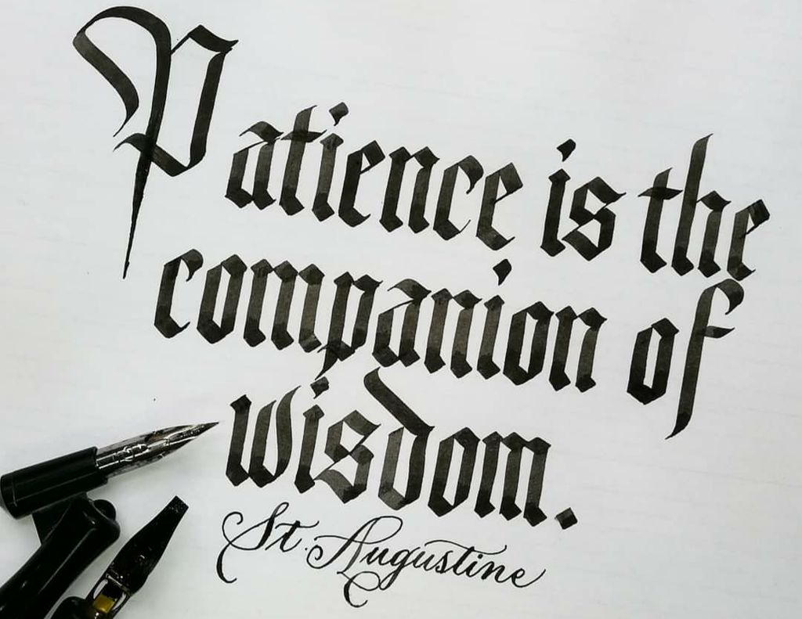

Overview
Crafting includes of variety of different objects and activities for all ages.
Crafts can be narrowed down into 5 different categories: textile, paper, decorative, functional, fashion.
Some things can fall into multiple differnt catgories, for example decorative and functional.



